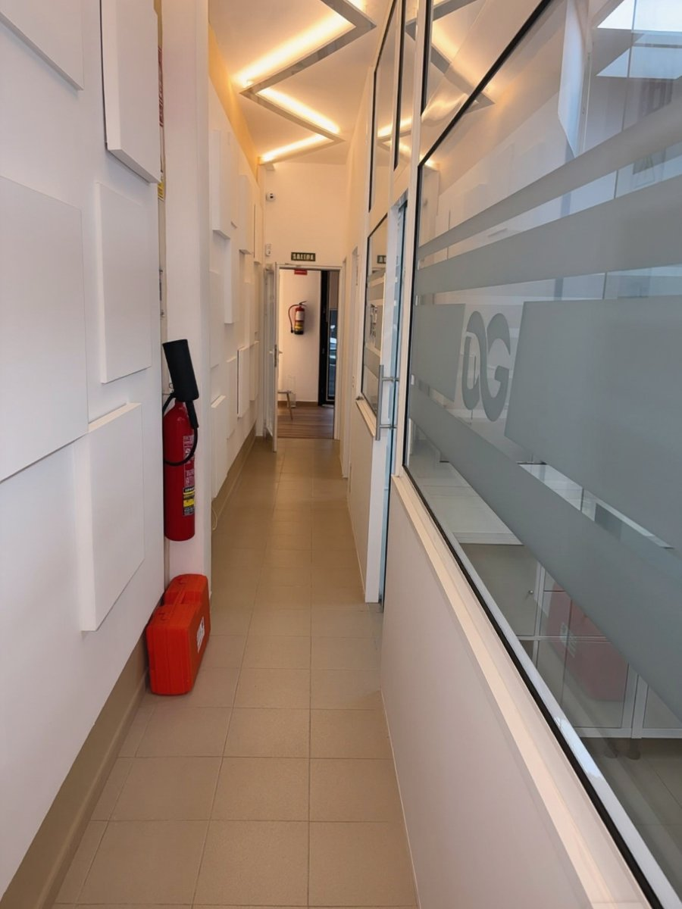

Limpieza profesional
Eliminamos el sarro y la placa con ultrasonidos, sin dañar el esmalte.
Odontología integral · La Orotava
Una limpieza profesional y una revisión a tiempo son la mejor inversión en tu salud. Detectamos los problemas cuando aún son pequeños, sencillos y económicos de resolver.

Prevenir es cuidarrevisiones sin prisas
En qué consiste
Aunque te cepilles bien, con el tiempo se acumula sarro en zonas a las que el cepillo no llega. Ese sarro solo se puede eliminar en la clínica y, si se deja, irrita las encías y favorece la caries y la enfermedad periodontal.
En cada visita de higiene hacemos una limpieza profesional con ultrasonidos y pulido, y una revisión completa de dientes, encías y empastes. Así detectamos a tiempo caries, desgastes o problemas de encías, cuando su tratamiento es más sencillo.
Indicaciones
Ventajas
Evitas caries y problemas de encías antes de que aparezcan.
Tratar a tiempo es siempre más sencillo y económico.
Dientes más lisos y sin manchas superficiales.
Eliminamos las bacterias que causan el mal aliento.
Paso a paso
Exploramos tu boca y comprobamos el estado de dientes, encías y restauraciones.
Eliminamos el sarro con ultrasonidos, por encima y justo por debajo de la encía.
Retiramos las manchas superficiales y dejamos los dientes lisos y brillantes.
Te damos pautas de higiene personalizadas y programamos tu siguiente revisión.
¿Tienes dudas sobre tu caso?
En la primera visita te lo explicamos todo, sin compromiso.
Preguntas frecuentes
¿Tienes otra pregunta? Escríbenos o llámanos y te atendemos encantados.
En general, cada 6 meses. Si tienes problemas de encías, implantes o mucha tendencia a acumular sarro, puede ser recomendable hacerla con más frecuencia.
No. Los ultrasonidos eliminan el sarro sin desgastar el esmalte. La sensación de dientes “más sensibles” después es pasajera.
Porque están inflamadas por el sarro acumulado. Al eliminarlo, las encías se recuperan y dejan de sangrar en pocos días.
Elimina las manchas superficiales y los dientes se ven más limpios y luminosos, pero no cambia su color natural. Para eso existe el blanqueamiento dental.
Sí. Revisamos a toda la familia y enseñamos a los más pequeños a cuidar sus dientes desde el principio.
También te puede interesar
Tratamiento de encías sangrantes, gingivitis y periodontitis para conservar tus dientes.
Ver tratamientoCarillas, blanqueamiento y diseño de sonrisa para un resultado armonioso y natural.
Ver tratamientoTratamiento de conductos para salvar dientes dañados o con dolor, de forma cómoda.
Ver tratamientoContacto
Av. Mayorazgo de Franchi, 16
Edf. Montymar, Local 1
38300 La Orotava, Santa Cruz de Tenerife
Lunes, martes, miércoles y viernes
9:00 – 17:00
Jueves
11:00 – 19:00